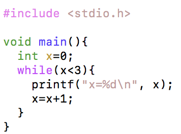
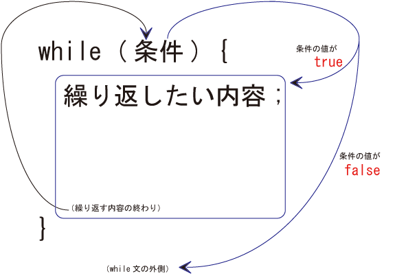
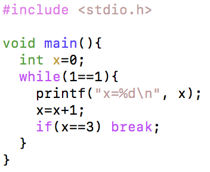
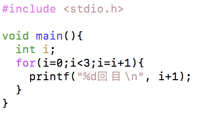
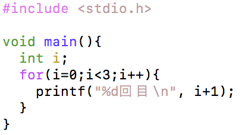

練習で使ったデータは必ず保存するようにしましょう。
まず、以下のソースコードを打ち込み、コンパイルして実行してみましょう。
実行すると、以下のように表示されます。
WhileLoopSample.c

実行すると、以下のように表示されます。
実行結果
x=0
x=1
x=2
while文を使うと、繰り返しを行うことができます。
while文
while (条件) {
繰り返したい内容;
}
例：
while (x<3) {
x=x+1;
}

では、次のように改良してみましょう。
WhileLoopSample.c

実行すると、以下のようになります。
実行結果
x=0
x=1
x=2
前のプログラムと実行結果は同じですが、少し動作が違います。とくに、while文を見てみましょう。 while文の反復条件が「1==1」となっており、常に正しい条件となっています。そのため、永遠に反復し続けます。いわゆる無限ループと呼ばれる状態です。しかし、結果を見れば明らかなように、きちんと3回で止まっています。これは、break文によるものです。
break文
break;
break文を実行すると、ループから抜け出すことができます。 また、同じ行のif文を見てみましょう。
if(x==3) break;
これは、以下のようなソースコードと同じになります。
if(x==3) {
break;
}
if文で実行したい命令が1行の場合、{}をつけずに書くことができます。 これは、while文や下のfor文でも同じことが可能です
決まった回数の反復を行う場合、より分かりやすい方法があります。 まず、以下のソースコードを打ち込み、コンパイルしてみましょう。
ForLoopSample.c

実行すると、以下のようになります。
実行結果
1回目
2回目
3回目
for文を使うと、繰り返しを行うことができます。
for文
for (初期値; 反復条件; 実行後の処理) {
繰り返したい内容;
}
例：
for(i=0; i<3; i=i+1) {
printf("%d回目",i+1);
}
では、次のようにプログラムを改良してみましょう。
ForLoopSample.c

インクリメント演算子というものもあります。
インクリメント演算子
変数++;
もしくは、
++変数;
もしくは、
変数+=1;
これは、「１増やす」という意味です。つまり、「i=i+1;」と書くことと同じです。 また、同様に「１減らす」つまり、「i=i-1;」という意味のデクリメント演算子というものもあります。
デクリメント演算子
変数--;
もしくは、
--変数;
もしくは、
変数-=1;
実行結果
値を入力してください。
10
1から10までの和は、55です。
実行結果（１）
値を入力してください。
7
7は素数です。
実行結果（２）
値を入力してください。
8
8は素数ではありません。
“******”を繰り返し標準出力して，高さが7，横が6の長方形を描画しましょう．ただし，while文, for文，do while文のいずれかを必ず使い，その中で標準出力をする命令は一回のみ使うこと．
回答：
******
******
******
******
******
******
******
九九の表を表示するプログラムを作成しましょう．
ある整数xに対して，1+2+ …+ xを出力するプログラムを書きましょう．ただし，xの値が1未満のときは注意文を出力しましょう．
ある整数xに対して，1*2* …* xを計算するプログラムを書きましょう．ただし，xの値が1未満のときは注意文を出力しましょう．
変数nに任意の0でない自然数を入力し，nが偶数なら，nを2で割り，奇数ならnに3をかけて1を足す操作を繰り返すプログラムを作成し，その結果を観察しましょう．
n個の中からm個を選ぶ組み合わせを求めてください．ただし，n, mは共に正の整数とし，n > mとする．
“*”を繰り返し標準出力して，高さが7，横が6の長方形を描画しましょう．ただし，while文, for文，do while文のいずれかを必ず使い，その中で標準出力をする命令は一回のみ使うこと．
回答：
******
******
******
******
******
******
******
文字「 * 」を並べて，縦 10 文字, 横 10 文字の三角形を描くプログラムを作成しなさい.
回答：
*
**
***
****
*****
******
*******
********
*********
**********
11 という 10 進数の数値を 2 進数で表示するプログラムを作成しましょう．
入力された数字の次の月のカレンダーを表示するプログラムを作成しなさい．なお，うるう年や曜日による表示場所の変更を考慮する必要はない．
1 から 100 までの整数のうち，平方数でも立方数でもないものを，すべて表示するプログラムをつくりなさい．